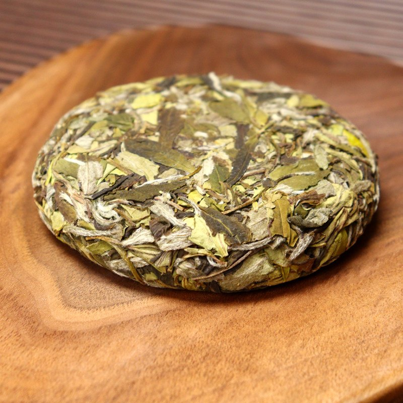
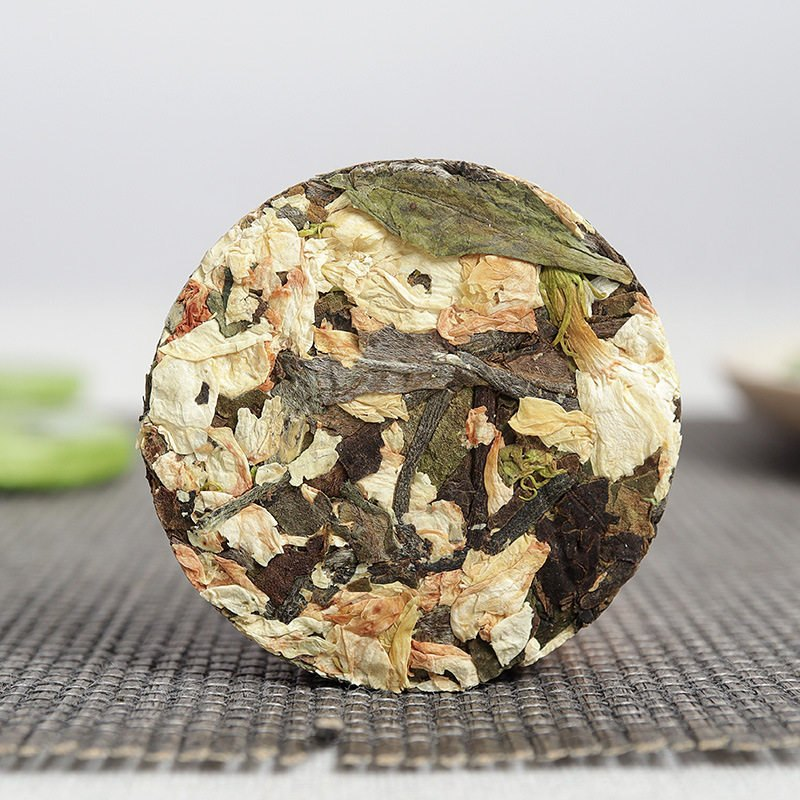

知识问答
让游客从“看过”，走到“愿意分享”
本页通过知识问答与主题海报预览两种轻量交互形式，增强信息浏览后的参与感与分享意愿，丰富网站的整体体验层次。
茶旅主题海报预览
选择茶型、场景和色调后，右侧海报会切换到不同背景图，用以展示福鼎白茶在数字媒介中的视觉表达方式。



本页通过知识问答与主题海报预览两种轻量交互形式，增强信息浏览后的参与感与分享意愿，丰富网站的整体体验层次。
选择茶型、场景和色调后，右侧海报会切换到不同背景图，用以展示福鼎白茶在数字媒介中的视觉表达方式。

